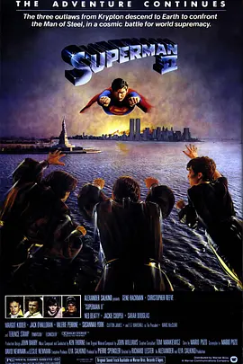

7.0
超人2
Superman II
1980
美国
评分 7.0
导演:
理查德·唐纳 / 理查德·莱斯特
演员:
吉恩·哈克曼 / 克里斯托弗·里夫 / 尼德·巴蒂 / 杰基·库珀 / 莎拉·道格拉斯
类型:
动作,科幻
剧情简介
外层空间的寂静被突如其来的撕裂声打破，三名来自氪星的流放者挣脱束缚，坠落地球。他们的力量与傲慢在小镇上无所顾忌地爆发，街道被震碎，车辆被掀翻，人们在混乱中仓皇奔逃。与此同时，远在极地冰宫的超人暂时搁下了守护者的身份。他卸下能力，只以凡人之身体验短暂的宁静，与心爱之人的相处让他第一次以普通人的方式面对世界。然而，地球上不断扩大的危险让这种平和迅速破裂。新闻画面中的废墟与哭喊声，让克拉克意识到力量背后的责任从未真正离开。他重新踏上回归之路，肩上的重量比以往更沉。他必须面对的不只是强敌的压迫，还有自己放弃力量所造成的后果。当三名入侵者面对总统的无力反抗时，天空突然被熟悉的身影划开。超人带着重新找回的坚定落下，目光中透着决绝。之后的战斗在城市间展开，玻璃幕墙不断破碎，风压卷起尘土与碎片。激烈的碰撞让整个大都会仿佛被推入风暴眼，但在混乱之中，超人始终保持对平民的保护，将每一次力量的爆发都控制在可承受的范围之内。最终，他用智慧与坚持让冲突迎来转折，也让自己重新理解何为“守护”。